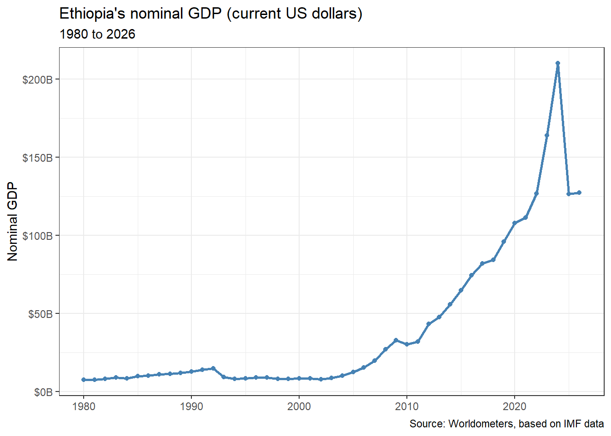
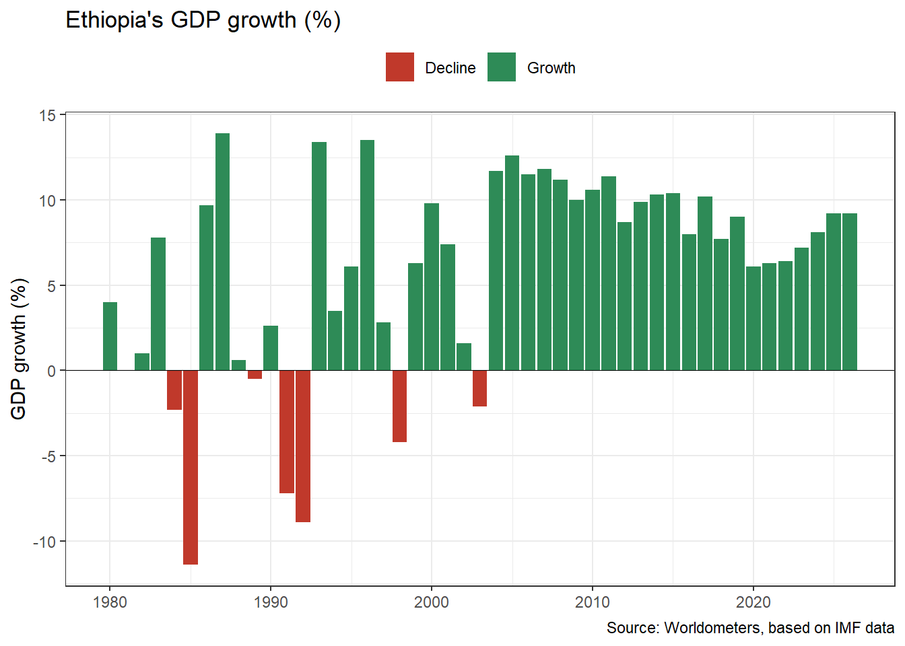

Plenty of useful data sits in tables on web pages. The slow way to get it into R is to select the table in your browser, paste it into Excel, fix the formatting, save it as a CSV and then read the CSV. It works, but it takes time, and every manual step is a chance to drop a row or paste into the wrong cell. When the page is updated, you have to do it all again.
The rvest package (say “harvest”) reads a web page straight into R and turns its tables into data frames. In this post we use it to pull Ethiopia’s GDP history from Worldometers, clean the numbers, and draw two charts.
- how to check whether a website is happy for you to scrape it
- what HTML is and how CSS selectors point at parts of a page
- how to read a page and extract its tables with rvest
- how to turn text such as “$127,145,000,000” and “−2.1%” into real numbers, including one trap that silently flips signs
- how to plot the result with ggplot2
Before you scrape: is it allowed?
Scraping means a program, not a person, is reading the website. Before you start, take two minutes to check that the site is fine with that:
-
Read the
robots.txtfile. Most websites publish one at the root of the domain, for example www.worldometers.info/robots.txt. It lists the parts of the site that automated tools should stay away from. When I checked Worldometers’ file for this post, it did not block any pages. - Read the terms of use. Worldometers’ disclaimer page does not mention scraping, and the site marks its content “All rights reserved”. Reading a public table for your own analysis or for learning, as we do here, is a common use. Republishing large amounts of the data is a different matter and would need permission.
- Be gentle. Download the page once, save what you need, and work from your saved copy. Do not run a scraper in a loop that hits the same page again and again.
One more point: Worldometers republishes figures from the IMF and the World Bank. For a report or a paper, cite and download from the original source. Scraping is a quick way to get started and a good skill to learn, not a replacement for the official data.
Install and load the packages
The commented install.packages() line installs everything this post uses. Note that package names go in quotes.
Read the web page
read_html() downloads the page and stores it in R:
gdp_url <- "https://www.worldometers.info/gdp/ethiopia-gdp/"
page <- read_html(gdp_url)
page{html_document}
<html data-astro-transition-scope="astro-m2otfycz-2" lang="en" dir="ltr" class="highcharts-light">
[1] <head>\n<meta http-equiv="Content-Type" content="text/html; charset=UTF-8 ...
[2] <body class="font-body text-base">\n<div class="flex flex-col" data-wm-pa ...What you see is the start of the page’s HTML, the language web pages are written in. An HTML page is a set of nested elements, each marked with a tag: <head> holds information about the page, <body> holds what you see, <p> is a paragraph, and <table> is a table. Our data is inside one of the <table> elements.
Finding the table: CSS selectors
To tell rvest which part of the page you want, you use a CSS selector, a short pattern that matches elements. The three you will use most often are:
| Selector | Matches | Example |
|---|---|---|
table |
every element with that tag | all tables on the page |
.name (dot first) |
every element with that class |
.table matches elements with class="table"
|
#name (hash first) |
the one element with that id |
#gdp matches id="gdp"
|
To see the tags, classes and ids behind a page, open it in Chrome or Firefox, right-click the table and choose Inspect. The developer tools open and highlight the HTML for the element you clicked. As you move the mouse over the code, the matching part of the page lights up.

When I first wrote this post in 2024, the table had the class table, so the selector was .table. Worldometers has since redesigned the page. That is a normal hazard of scraping: a selector that depends on a class name breaks when the designers rename the class. Here we use the tag selector table instead, which matches every table on the page whatever its class.
Extract the tables
html_elements() finds all elements that match a selector, and html_table() turns each HTML table into a data frame:
table_nodes <- html_elements(page, "table")
tables <- html_table(table_nodes)
length(tables)[1] 5The page has several tables, so tables is a list of data frames. Before picking one, look at the column names of each:
lapply(tables, names)[[1]]
[1] "Year" "GDP Nominal (Current USD)"
[3] "GDP Growth" "GDP per capita"
[5] "Pop. Change"
[[2]]
[1] "Year" "GDP PPP" "GDP PPP per Capita"
[4] "PPP Per Capita Change" "Pop. Change"
[[3]]
[1] "Year"
[2] "GDP Nominal (Current USD)"
[3] "GDP Real (Constant, Inflation Adjusted)"
[4] "Pop. Change"
[[4]]
[1] "Year" "GDP Nominal (Current USD)"
[3] "GDP Growth" "GDP per capita"
[5] "Pop. Change"
[[5]]
[1] "Year" "GDP PPP" "GDP PPP per Capita"
[4] "PPP Per Capita Change" "Pop. Change" The first table has the yearly figures we want: nominal GDP, GDP growth, GDP per capita and population change. We take it out of the list with double brackets:
gdp_raw <- tables[[1]]
gdp_raw# A tibble: 47 × 5
Year `GDP Nominal (Current USD)` `GDP Growth` `GDP per capita` `Pop. Change`
<int> <chr> <chr> <chr> <chr>
1 2026 $127,145,000,000 9.2% $1,131 +2.53%
2 2025 $126,351,000,000 9.2% $1,142 +2.58%
3 2024 $210,000,000,000 8.1% $1,937 +2.62%
4 2023 $163,709,000,000 7.2% $1,549 +2.64%
5 2022 $126,770,000,000 6.4% $1,218 +2.66%
6 2021 $111,266,000,000 6.3% $1,092 +2.71%
7 2020 $107,672,000,000 6.1% $1,080 +2.75%
8 2019 $95,945,000,000 9.0% $983 +2.73%
9 2018 $84,298,000,000 7.7% $883 +2.73%
10 2017 $81,788,000,000 10.2% $876 +2.76%
# ℹ 37 more rowsIf Worldometers reorders its tables in future, the lapply(tables, names) output tells you which number to use instead of 1.
Clean the data
The table looks right, but R does not see numbers yet:
glimpse(gdp_raw)Rows: 47
Columns: 5
$ Year <int> 2026, 2025, 2024, 2023, 2022, 2021, 2020, …
$ `GDP Nominal (Current USD)` <chr> "$127,145,000,000", "$126,351,000,000", "$…
$ `GDP Growth` <chr> "9.2%", "9.2%", "8.1%", "7.2%", "6.4%", "6…
$ `GDP per capita` <chr> "$1,131", "$1,142", "$1,937", "$1,549", "$…
$ `Pop. Change` <chr> "+2.53%", "+2.58%", "+2.62%", "+2.64%", "+…Every column except Year is stored as text (<chr>), because the values contain dollar signs, commas, percent signs and plus signs. We also have column names with spaces and parentheses, which are awkward to type in R. Two steps fix this.
Step 1: tidy the column names
clean_names() from the janitor package converts names to lower case with underscores, so “GDP Nominal (Current USD)” becomes gdp_nominal_current_usd:
gdp <- janitor::clean_names(gdp_raw)
names(gdp)[1] "year" "gdp_nominal_current_usd"
[3] "gdp_growth" "gdp_per_capita"
[5] "pop_change" Step 2: turn text into numbers (and avoid a sign trap)
parse_number() from readr reads the number out of a piece of text and ignores symbols around it. It handles dollar signs, commas and percent signs. There is one catch, though. Worldometers writes negative growth with the typographic minus sign “−” (Unicode U+2212), not the ordinary hyphen “-” on your keyboard. They look almost the same, but parse_number() only understands the hyphen, and it drops the other one without telling you:
parse_number("-2.1%") # ordinary hyphen[1] -2.1parse_number("−2.1%") # typographic minus: the sign is lost[1] 2.1The second result is 2.1, a positive number. If we did not catch this, every year of negative growth would turn into positive growth in our charts. So we write a small function that first swaps the typographic minus for a hyphen and then parses the number:
to_number <- function(x) {
x <- str_replace_all(as.character(x), "−", "-")
parse_number(x)
}
to_number(c("$127,145,000,000", "9.2%", "+2.53%", "−2.1%"))[1] 1.27145e+11 9.20000e+00 2.53000e+00 -2.10000e+00Now apply it to every column at once with across():
gdp <- gdp |>
mutate(across(everything(), to_number))
glimpse(gdp)Rows: 47
Columns: 5
$ year <dbl> 2026, 2025, 2024, 2023, 2022, 2021, 2020, 2019…
$ gdp_nominal_current_usd <dbl> 1.27145e+11, 1.26351e+11, 2.10000e+11, 1.63709…
$ gdp_growth <dbl> 9.2, 9.2, 8.1, 7.2, 6.4, 6.3, 6.1, 9.0, 7.7, 1…
$ gdp_per_capita <dbl> 1131, 1142, 1937, 1549, 1218, 1092, 1080, 983,…
$ pop_change <dbl> 2.53, 2.58, 2.62, 2.64, 2.66, 2.71, 2.75, 2.73…mutate(across(everything(), to_number)) means “for every column, replace its values with to_number() of those values”. All columns are now numeric (<dbl>).
Check the result
Cleaning steps can go wrong without any error, as the minus sign just showed. A quick check against the website is always worth it. Here are the years with negative growth; compare them with the page:
# A tibble: 7 × 2
year gdp_growth
<dbl> <dbl>
1 2003 -2.1
2 1998 -4.2
3 1992 -8.9
4 1991 -7.2
5 1989 -0.5
6 1985 -11.4
7 1984 -2.3If this returns no rows while the website shows some negative years, the minus signs were lost somewhere. A cell that was empty on the website shows up as NA, which is what we want.
Finally, save a copy so you do not need to download the page again every time you work on the analysis:
write_csv(gdp, "ethiopia_gdp_worldometers.csv")Plot nominal GDP
With clean numbers, ggplot2 needs only a few lines:
gdp |>
ggplot(aes(x = year, y = gdp_nominal_current_usd)) +
geom_line(color = "steelblue", linewidth = 1) +
geom_point(color = "steelblue", size = 1.5) +
scale_y_continuous(labels = scales::label_dollar(scale = 1e-9, suffix = "B")) +
labs(
title = "Ethiopia's nominal GDP (current US dollars)",
subtitle = paste0(min(gdp$year), " to ", max(gdp$year)),
x = NULL,
y = "Nominal GDP",
caption = "Source: Worldometers, based on IMF data"
) +
theme_bw()
A few things worth knowing:
-
aes(x = year, y = gdp_nominal_current_usd)maps the columns to the axes. Becauseyearis a number, ggplot2 spaces the years correctly and picks sensible tick marks for us. -
scales::label_dollar(scale = 1e-9, suffix = "B")divides the values by one billion and shows them as “$100B” instead of “100000000000”. - The subtitle is built from the data with
min()andmax(), so it stays correct when the website adds a new year.
Nominal GDP in US dollars moves with the exchange rate as well as with the economy. If you see a sharp drop in the most recent years, the likely cause is Ethiopia’s move to a market-based exchange rate for the birr in 2024. Check the growth chart below: if growth stayed positive in those years, the economy did not shrink, and the drop comes from converting birr into dollars at a new rate.
Plot GDP growth
The second chart shows yearly growth, with positive and negative years in different colors:
gdp |>
filter(!is.na(gdp_growth)) |>
mutate(direction = if_else(gdp_growth >= 0, "Growth", "Decline")) |>
ggplot(aes(x = year, y = gdp_growth, fill = direction)) +
geom_col() +
geom_hline(yintercept = 0, linewidth = 0.3) +
scale_fill_manual(values = c(Growth = "#2E8B57", Decline = "#C0392B")) +
labs(
title = "Ethiopia's GDP growth (%)",
x = NULL,
y = "GDP growth (%)",
fill = NULL,
caption = "Source: Worldometers, based on IMF data"
) +
theme_bw() +
theme(legend.position = "top")
-
filter(!is.na(gdp_growth))drops the year with no growth value, so ggplot2 does not warn about it. -
if_else()labels each year “Growth” or “Decline”, andfill = directioncolors the bars by that label. -
scale_fill_manual()sets the two colors by name.
This is the chart where the minus-sign fix matters. Without it, the decline years would show as green bars.
Scraping politely with the polite package
For anything beyond a single page, have a look at the polite package. It reads robots.txt for you, introduces itself to the website, and waits between requests. The code is almost the same as before:
library(polite)
session <- bow(gdp_url, user_agent = "GDP tutorial by Gutama Girja Urago")
page <- scrape(session)bow() checks that you are allowed to visit the page, and scrape() downloads it. The rest of the post works unchanged.
Common mistakes
-
The selector returns nothing.
html_elements()gives an empty result when nothing matches. Inspect the page again: the class or id may have changed, as it did for this page. -
Picking the wrong table. A page often has several tables. Check
lapply(tables, names)before choosing one by number. -
Numbers that are still text. If a column shows
<chr>inglimpse(), it has not been converted. Plotting it gives odd results, and arithmetic fails. - Silent changes to values. Look-alike characters, such as the typographic minus here or thin spaces in large numbers, can change values without any error. Always compare a few cleaned values with the website.
-
Pages built by JavaScript. Some sites load their tables after the page opens.
read_html()only sees the original HTML, so those tables will be missing. In that case, look for a download button or an API instead.
Recap
Check robots.txt and the terms of use, then read the page with read_html(), find the tables with html_elements() and turn them into data frames with html_table(). Clean the column names with janitor::clean_names() and convert text to numbers with parse_number(), after replacing any typographic minus signs. Check a few values against the website, save a local copy, and plot. The same steps work for most tables you find on the web. The two parts that change from site to site are the selector and the cleaning.